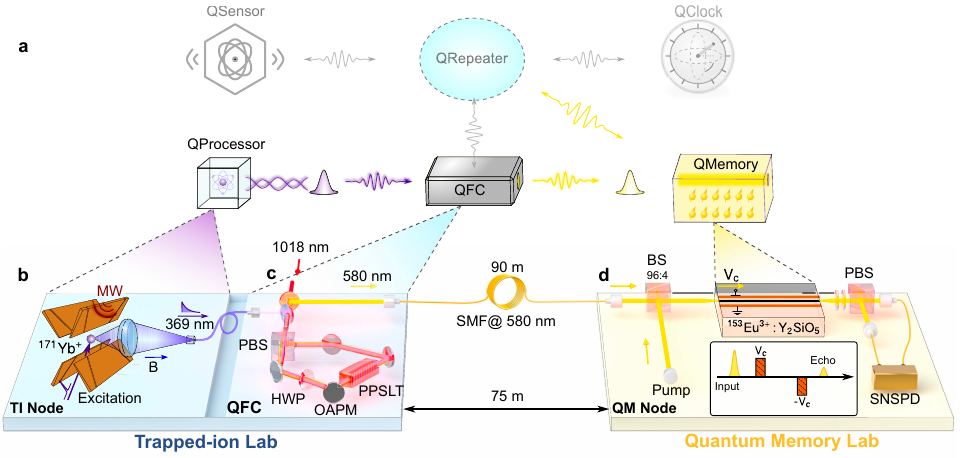
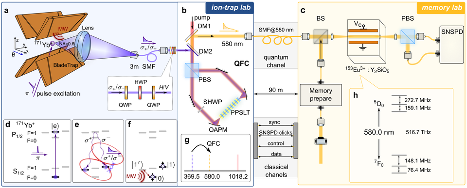

跨体系量子互联
混合量子网络
通过量子频率转换连接离子阱处理器与固态量子存储器，构建跨物理体系的混合量子网络。




离子阱提供长相干时间和高保真量子操控，固态量子存储器则存储光量子态。我们发展连接这两类体系的量子接口，让离子节点的本地操控与远端光学存储协同工作，构建混合量子网络。
保偏频率转换接口将镱离子的 369.5 nm 光子转换到铕掺杂晶体存储器的 580 nm 波段。Sagnac 环稳定偏振分量间的相对相位，离轴抛物面镜提供跨波段消色差耦合（Chinese Optics Letters，2026）。上方两幅图分别展示网络架构，以及连接离子节点、频率转换模块和存储器的实验系统。
我们与周宗权教授团队合作，在相距 75 m、通过 90 m 光纤连接的两个实验室间实现离子—存储器纠缠，并通过存储和读出后的联合测量验证异构链路中的量子关联。相关成果见预印本 Heterogeneous entanglement between a trapped ion and a solid-state quantum memory（arXiv:2603.05836），实验细节亦收录于王晨旭博士学位论文（2026）。未来，我们还将开发离子与中性原子系统的接口，探索跨物理体系的协同分布式量子计算。